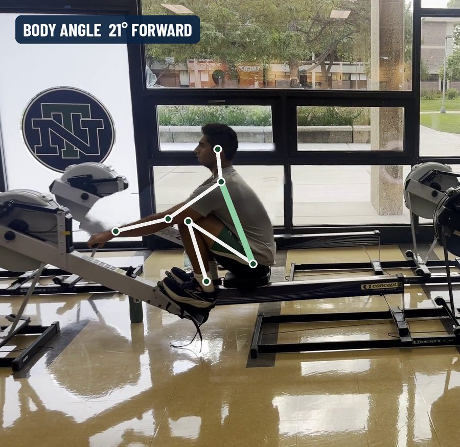
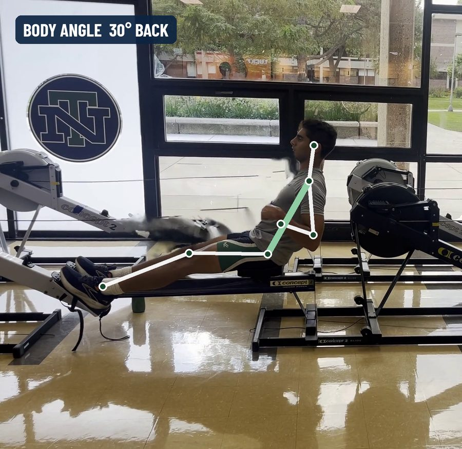
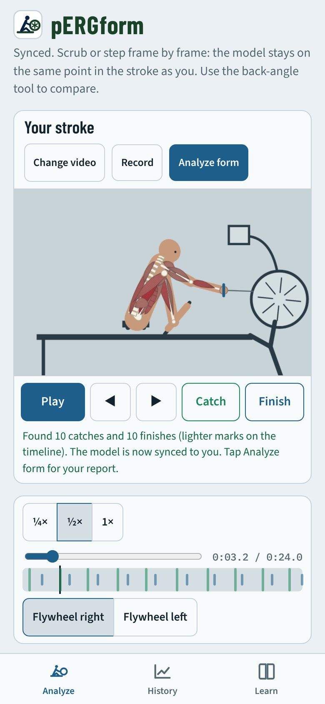
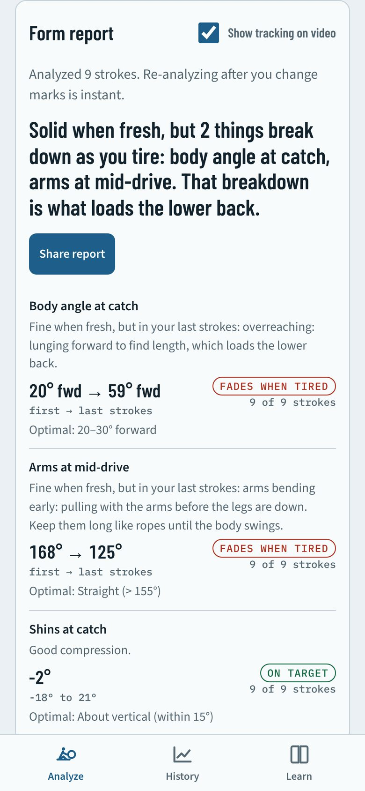
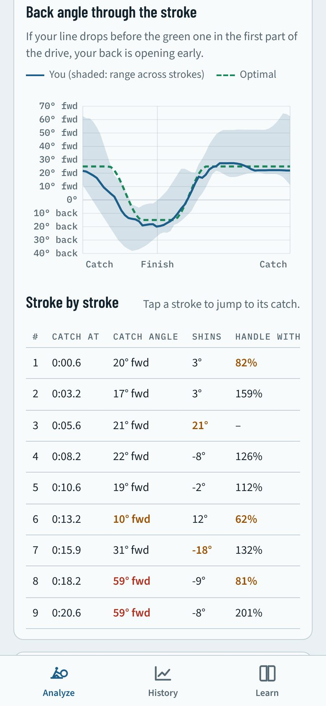
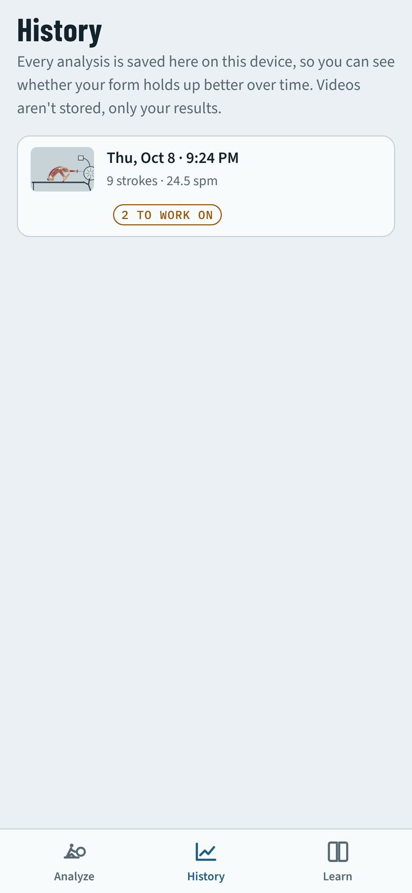

Tracking a real stroke
Arjun rowing at New Trier. The pose model finds each joint on every frame, and the body angle (green) is measured from hip to shoulder.


The problem
Rowers train for hours on indoor rowing machines, often without a coach watching. Form tends to hold up while you're fresh and slip at the end of a hard piece: overreaching at the catch, pulling with the arms too early, rushing the slide. Those are the habits that load the lower back. pERGform gives a rower the feedback a coach would, from a short video anyone can take.




How it works
- Body tracking on the deviceA pose-estimation neural network (MoveNet, running in TensorFlow.js) finds the hips, shoulders, knees, ankles, elbows and wrists in each frame. Nothing is uploaded; the model ships inside the app and runs offline.
- Cleaning noisy dataJoint positions from a single phone camera are noisy, so low-confidence points are dropped, outliers are removed with a rolling median filter, and gaps are interpolated and smoothed.
- Finding every strokeAutocorrelation of the seat's motion estimates the stroke rate. Each catch is placed where the seat is furthest forward and each finish where the handle is closest to the body. Any mark can be corrected frame by frame.
- Grading against an optimal strokeSeven measures, from body angle at the catch to the recovery-to-drive ratio, are graded against coaching standards. Comparing the first strokes with the last shows what breaks down with fatigue.
- Showing it clearlyA kinematic model of a rower, drawn with the working muscle groups, rows in time with the video so the difference between good and tired form is visible, not just a number.
Design decisions
Private by design
Videos never leave the phone. There are no accounts, analytics or ads, and the App Store privacy label is "Data Not Collected".
Honest about accuracy
An automatic lower-back rounding check was tested and removed because a side-on phone video couldn't measure it reliably. The app says so instead of guessing.
Built to be corrected
Automatic detection gets most strokes right; when it doesn't, the rower can move, nudge or delete any mark and re-run the report instantly.
Accessible
44-point touch targets, contrast-checked colors, a reduced-motion mode, and layouts tuned separately for iPhone and iPad.
What's next
pERGform Crew
A second tool, in development, that analyzes video of an eight-person boat on the water: whether the crew catches together, catch timing for each seat in milliseconds, sequencing out of bow, shooting the slide, and how evenly the boat runs between strokes. Tested on simulated footage with known faults, it measured a seat catching 70 ms late at about 78 ms.